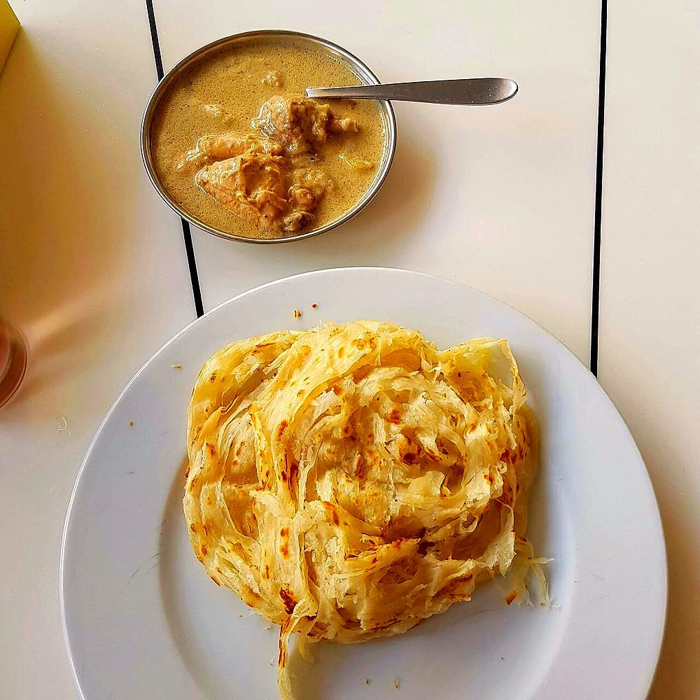

Contains: milk, gluten, egg
Checked against the ingredient list for ten allergens: milk, egg, fish, crustaceans, tree nuts, peanuts, sesame, mustard, soy and gluten. Brands vary, so read the label on anything new to you.
Ingredients
Quantities for 6.
- 500g Maida
- 1 Eggsoptional, for softness; leave out for an egg-free parottaoptional
- 1 tsp Sugar
- 100ml Milkor water; omit for a dairy-free parottaoptional
- 100ml Neutral Oil
- 1 tsp Salt
Cookware
tawa, stovetop
Before you start
- The layers come from oil, stretching and coiling, not from folding like a paratha. The dough must be rested long enough to stretch paper thin without tearing.
- Rest twice: once after kneading, once after shaping into balls. Two hours total is the minimum.
Method
- Knead the maida with salt, sugar, egg and milk into a very soft dough, adding water as needed. Work it 10 minutes.
- Coat with oil, cover, and rest 1 hour.
- Divide into 8, roll each into an oiled ball, and rest another hour.The second rest is what lets the dough stretch without tearing.
- Flatten a ball on an oiled surface and stretch it outward with your palms until nearly transparent.Stretch, do not roll. A rolling pin cannot make it thin enough.
- Pleat the sheet like a fan along its length, then coil the strip into a spiral and tuck the end under. Rest 15 minutes.
- Flatten the coil gently to a 15cm round and cook on a hot tawa with oil, 2 minutes a side, until golden and blistered.
- While hot, clap the parotta between your palms to loosen the layers.The clap is not showmanship. It is what separates the sheets.
Safe temperatures: Egg dishes are done at 71°C / 160°F; a whole egg when the yolk and white are both firm. Reheat leftovers to 74°C / 165°F. FoodSafety.gov
Storage
Best hot. They keep a day wrapped and reheat on a dry tawa. Coiled uncooked dough keeps 24 hours refrigerated and cooks straight from cold.
Nutrition Good estimate
Medium protein: 10 g a serving, 9% of the calories
| Per serving125 g | Per 100 g | |
|---|---|---|
| Calories | 463 kcal | 371 kcal |
| Protein | 10.0 g | 8 g |
| Carbohydrate | 65.2 g | 52 g |
| of which sugars | 1.8 g | 2 g |
| Fibre | 2.2 g | 2 g |
| Fat | 17.4 g | 14 g |
| of which saturated | 2.3 g | 2 g |
| of which unsaturated | 14.1 g | 11 g |
Estimated from raw ingredients using USDA FoodData Central.
Times, yields, allergens and nutrition are guidance. Use your own judgement on doneness and on storing. More in About.